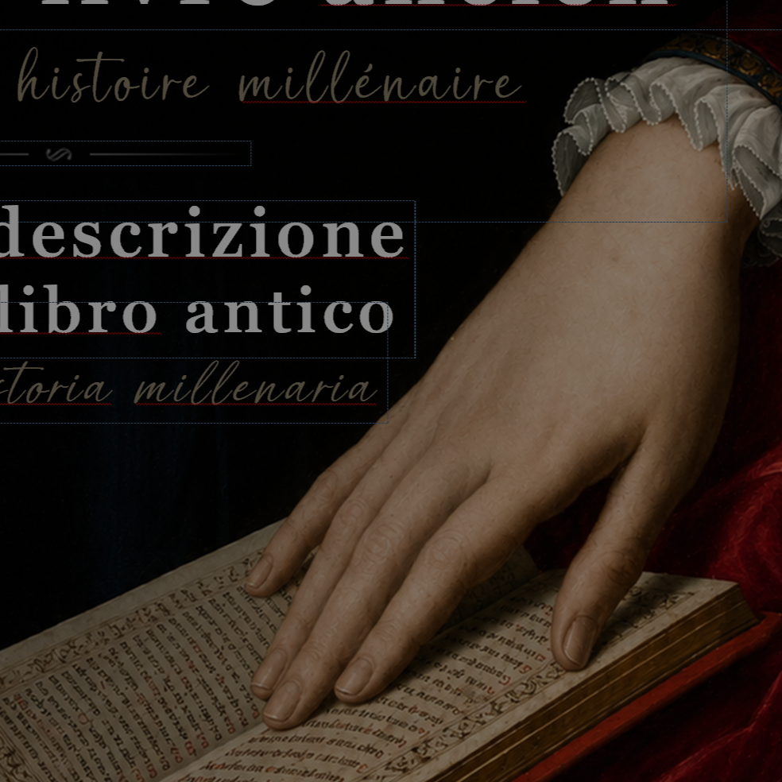
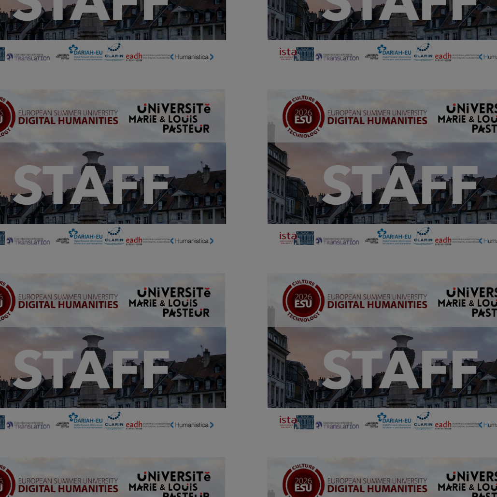
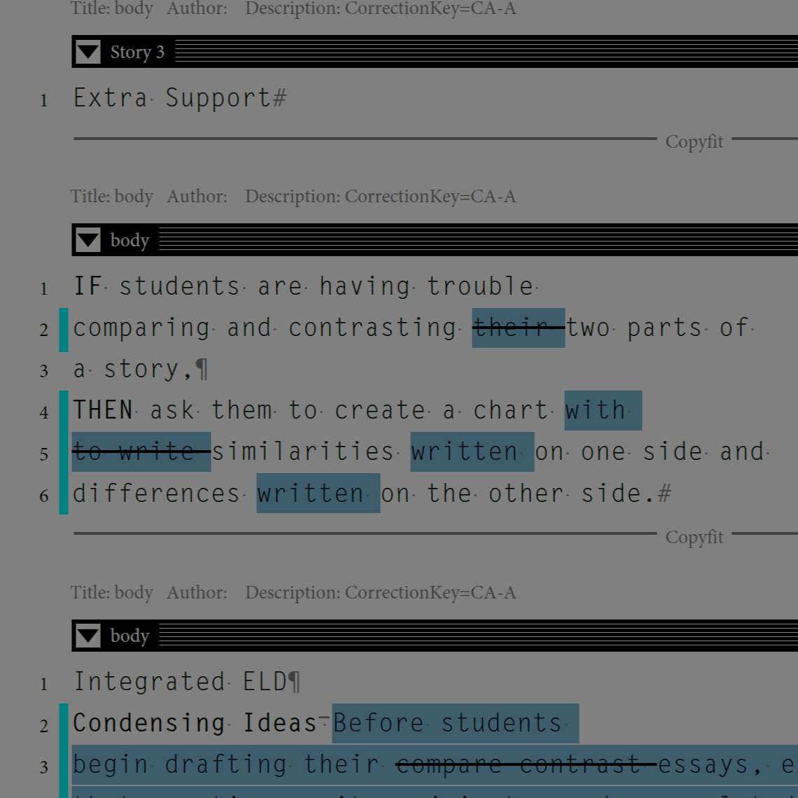
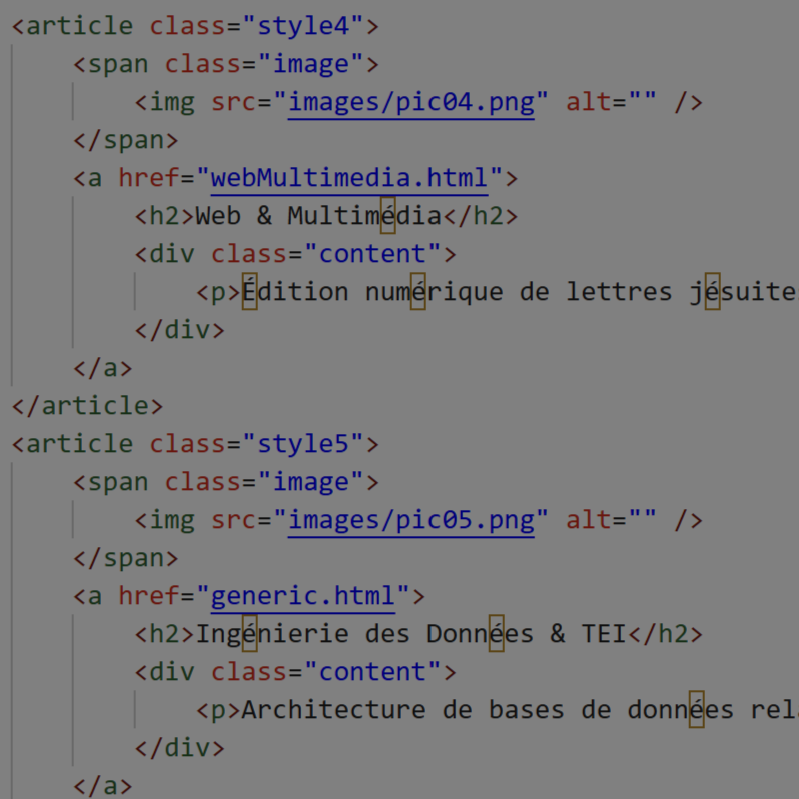
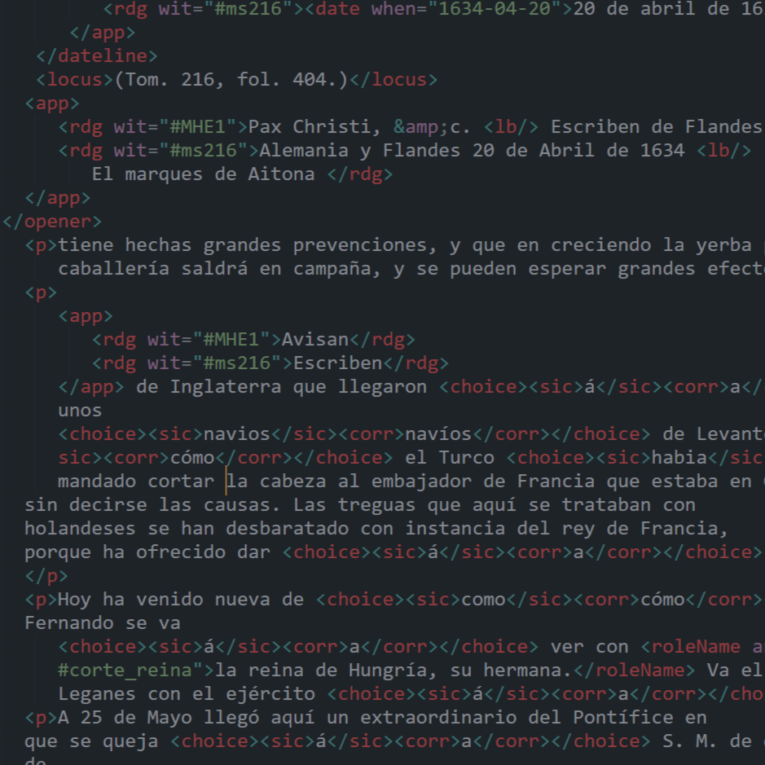
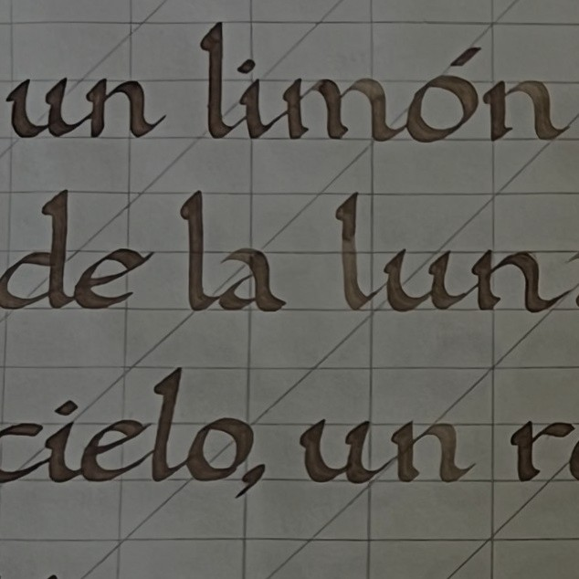

Conception Graphique
Création d'affiches et de posters pour des événements académiques et des colloques internationaux (Projet européen Sliding Doors, Master Rare Book).
Spécialisée dans la conception graphique (PAO), l'intégration web et la structuration de données (XML-TEI). Ce profil hybride allie sensibilité visuelle, maîtrise des outils éditoriaux et rigueur académique. Mes réalisations se situent au croisement du design et de la Science ouverte, au service de la valorisation de la recherche.

Création d'affiches et de posters pour des événements académiques et des colloques internationaux (Projet européen Sliding Doors, Master Rare Book).

Déclinaison graphique pour la communication scientifique. Design de badges nominatifs et flyers de présentation des résultats (ESU DH 2025-2026, Sliding Doors).

Conception de catalogues de vente et de programmes. Maîtrise du code typographique, préparation de copie et flux de travail collaboratif (Adobe InCopy, relecture-correction).

Édition numérique de lettres jésuites du XVIIe siècle sous forme de blog interactif. Gestion de site web multilingue (6 langues) et montage vidéo (Archive du projet européen Sliding Doors).

Architecture de bases de données relationnelles (Thèse de doctorat) et structuration sémantique de textes pour l'édition numérique et la Science ouverte (XML-TEI, code ePub).

Photographie personnelle (intégrée à mes conceptions graphiques) et calligraphie humanistique. Un œil attentif à la composition.